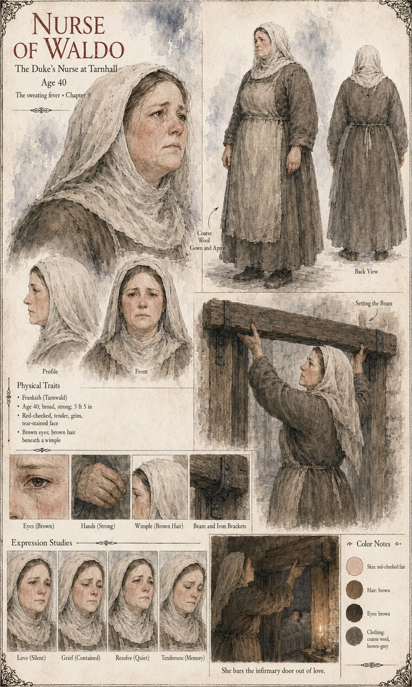

Nurse of Waldo
The Duke's nurse at Tarnhall · 40 years old by her sheet · the sweating fever, Chapter 9
The sheet calls her the Nurse of Waldo and, in the same line, the Duke's Nurse at Tarnhall, so Waldo is the Duke of Tarnwald, whom the other pages name only by his title; Tarnhall is his hall, where a boy of eleven polishes his eighty-eight swords. Her story is one act, set in the sweating fever of Chapter 9: she lifts a heavy beam into the iron brackets across the infirmary door, and the sheet's caption says She bars the infirmary door out of love. The publication notes say whom she bars in: the nine-year-old Waldo, for the forty days of the fever, and she sets the beam in its brackets as quietly as she can. Its large scene draws her at the door by candlelight, a figure lying in a bed in the dark room beyond, presumably the boy; the sheet does not say on which side of the door she stands. Waldo's own page has him unable to bear a shut door, and neither page says that the two are connected. The other Tarnwald people on file are Berthar, Gerold, Odilo and the Duke's Pages.
Her expression panels run Love (Silent), Grief (Contained), Resolve (Quiet) and Tenderness (Memory), and in all of them her face is tear-stained. Written from the sheet and the character notes in the case's publication-prep file; the manuscript itself was not to hand. Her age of 40, her Frankish origin in Tarnwald, broad strong build of about 5 ft 5 in, red-cheeked grim tender face, brown eyes, brown hair beneath a wimple and coarse wool gown and apron are the sheet's own.